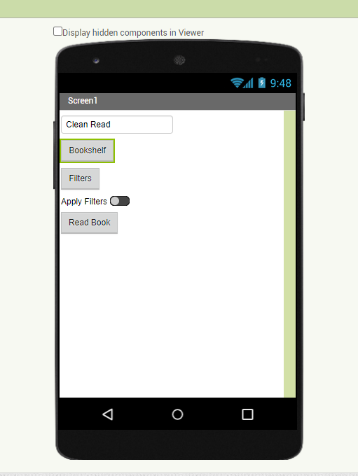

My Projects
White Water Rafting Site
This is a project from school where I learned the basics of html and css design. It was a rough learning curve but it is my first real website so I am proud of it as it was my first real success in developing and designing a web page. It was geared towards attracting people aged 20-35 who wanted to take an exciting vacation with their families, friends, or individually. It sits in my GitHub repository as a reminder that web development is possible for me. I faced many challenges along the way of designing and building it, most of which had to do with learning all of the terms I had to then try to apply to this project with some level of understanding.

My First App
This is the second App I've ever designed, but the first that was on my own. The idea behind this app was to provide a source for readers who wanted to read without being exposed to undesired or perceived innapropriate content and for parents who are concered with the assigned reading that their kids are given through school assignments. This one was just a prototype as I designed it to partner with a reading App like Audible or Libby that already holds the data of the book an individually wants to read.
Certificates
- Brigham Young University Idaho - Bachelor's Degree in Software Engineering.
- Certificate in Computer Programming.